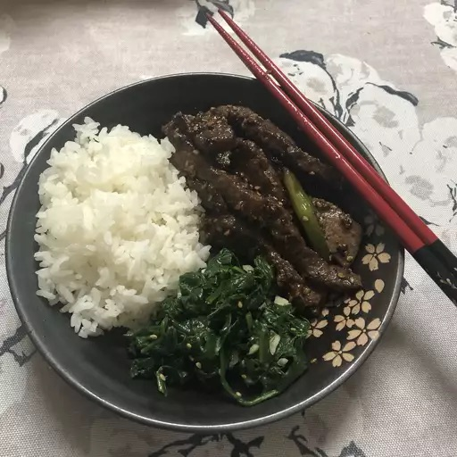

Bulgogi

Description:
Bulgogi is a Korean dish involving marinated, thinly cut meat.
Beef bulgogi is probably most common, but chicken or pork is sometimes used as well.
In addition to rice, Bulgogi can be accompanied by a variety of banchan (side dishes), such as kimchi, pickled radish, or spinach.
Banchan usually come in small portions, but feel free to make more for yourself of whatever you like.
A complete meal might also involve a soup, such as jjigae. Nonetheless, bulgogi and rice are perfectly tasty all on their own.
Ingredients:
- A thin steak of your choosing
- Soy sauce
- Green onions
- Garlic
- Sesame seeds
- Sesame oil
- Pepper
Steps:
-
Combine and whisk all the ingredients but the steak to make a marinade.
-
Place the steak in a shallow bowl, pour the marinade over, and let it sit for at least an hour.
-
While you are waiting for the steak to marinate, make some rice and any sides that you want (if you want something pickled, like kimchi, you may need to start earlier).
-
Grill the steak on high heat until both sides are fully charred. You have finished making your bulgogi.
Recipe credit: allrecipes.com
Home